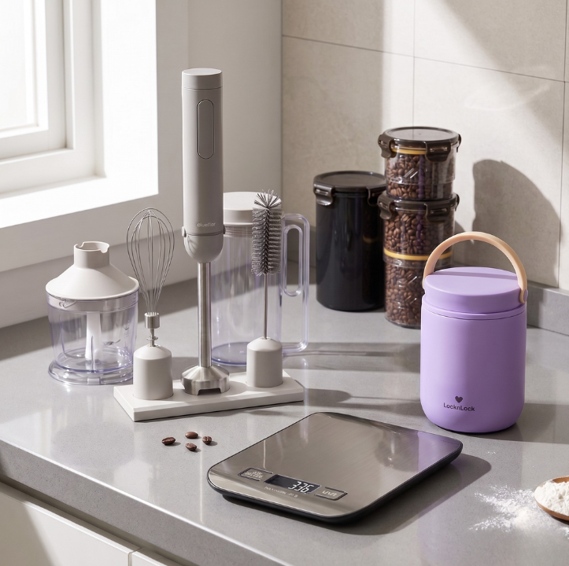

🥥 코코넛 오일
다영's Pick : 팻밤의 베이스가 되는 지방이에요. 상온에서 굳는 성질 덕분에 팻밤이 초콜릿처럼 단단하게 유지돼요. 비정제(엑스트라 버진)로 고르면 은은한 코코넛 향이 살아요.
🍫 발로나 코코아 파우더
다영's Pick : 발로나는 파티시에들이 신뢰하는 프랑스 최고급 초콜릿 브랜드예요. 팻밤에 넣으면 시판 초콜릿이 부럽지 않은 깊고 묵직한 카카오 향이 나요.

🧈 무염 목초버터 : 프레지덩트
다영's Pick : 목초 소의 우유 버터라 오메가-3·CLA가 일반 버터보다 높아 지방의 질이 달라요. 깔끔하고 담백해서 팻밤에도 잘 어울려요.

🧈 무염 목초버터 : 이즈니
다영's Pick : 프랑스 노르망디 AOC 인증 버터라 유지방이 높고, 팻밤에 넣으면 초콜릿 버터 향이 진하게 살아요. 한 번 써보면 못 돌아간다는 분들도 있어요.

🍬 알룰로스
다영's Pick : 혈당 스파이크 없이 단맛을 낼 수 있는 천연 감미료예요. 팻밤엔 분말 타입이 더 잘 섞여요. 스테비아보다 뒷맛이 훨씬 깔끔해요.

🧂 히말라야 소금
다영's Pick : 팻밤에 한 꼬집 넣으면 단맛이 훨씬 입체적으로 살아나요. 천연 미네랄이 풍부한 히말라야 핑크소금을 그라인더로 매번 신선하게 갈아 써요.

💧 MCT 오일 : 마이노멀
다영's Pick : MCT 오일의 핵심 C8(카프릴산)은 간에서 가장 빠르게 케톤으로 전환되는 지방산이에요. 팻밤에 한 스푼 더하면 케톤 부스팅 효과가 좋아져요.

🧊 실리콘 몰드
다영's Pick : 팻밤을 한입 크기로 굳히는 필수 도구예요. 실리콘이라 얼린 뒤에 톡톡 빼기 편하고, 초콜릿·얼음 몰드 겸용으로 쓸 수 있어요.